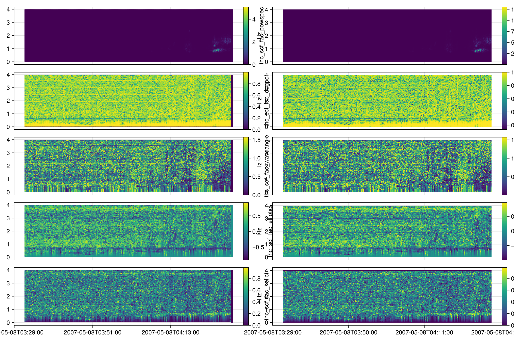

Validation with PySPEDAS
- Calling Python from Julia (via PythonCall.jl) introduces only a negligible overhead, typically within nanoseconds.
- Memory allocations shown in Julia benchmarks do not include allocations that occur within Python. To measure Python-side allocations, profiling should be done directly in Python.
- The documentation and benchmarks are generated using a single thread on GitHub Actions. Running the code locally with multiple threads (e.g., by setting
JULIA_NUM_THREADS) can yield even greater performance improvements for Julia.
using PySPEDAS
using SPEDAS
using PythonCall
using DimensionalData
using PySPEDAS: get_data
using CairoMakie, SpacePhysicsMakie
using Chairmarks
using TestWave polarization
References: twavpol, test_twavpol.py - PySPEDAS, Wave polarization using SCM data - PySPEDAS
@py import pyspedas.analysis.tests.test_twavpol: TwavpolDataValidation
TwavpolDataValidation.setUpClass()
thc_scf_fac = get_data("thc_scf_fac") |> DimArray
py_tvars = [
"thc_scf_fac_powspec",
"thc_scf_fac_degpol",
"thc_scf_fac_waveangle",
"thc_scf_fac_elliptict",
"thc_scf_fac_helict",
]
py_result = DimStack(DimArray.(get_data.(py_tvars)))
res = twavpol(thc_scf_fac)
res.power.metadata["scale"] = identity
f = Figure(;size=(1200, 800))
tplot(f[1,1], py_result)
tplot(f[1,2], res)
f
Benchmark
@b twavpol(thc_scf_fac), pyspedas.twavpol("thc_scf_fac")(18.783 ms (160 allocs: 1.952 MiB, without a warmup), 5.860 s (7 allocs: 120 bytes, without a warmup))Julia is about 100 times faster than Python.
Minimum variance analysis
References: mva_eigen, test_minvar.py - PySPEDAS
@py import pyspedas.cotrans_tools.tests.test_minvar: TestMinvar
@py import pyspedas.cotrans_tools.minvar_matrix_make: minvar_matrix_make
isapprox_eigenvector(v1, v2) = isapprox(v1, v2) || isapprox(v1, -v2)
pytest = TestMinvar()
pytest.setUpClass()
thb_fgs_gsm = get_data("idl_thb_fgs_gsm_mvaclipped1") |> DimArray
jl_mva_eigen = mva_eigen(thb_fgs_gsm)
jl_mva_mat = jl_mva_eigen.vectors
jl_mva_vals = jl_mva_eigen.values
py_mva_vals = PyArray(pytest.vals.y) |> vec
py_mva_mat = PyArray(pytest.mat.y[0])'
@assert isapprox(jl_mva_vals, py_mva_vals)
@assert all(isapprox_eigenvector.(eachcol(jl_mva_mat), eachcol(py_mva_mat)))Since eigenvectors are only unique up to sign; therefore, the test checks if each Julia eigenvector is approximately equal to the corresponding Python eigenvector or its negative. Test passed.
Benchmark
@b mva_eigen(thb_fgs_gsm), minvar_matrix_make("idl_thb_fgs_gsm_mvaclipped1")Julia demonstrates a performance advantage of approximately 1000 times over Python, with significantly reduced memory allocations. Moreover, Julia's implementation is generalized for N-dimensional data.